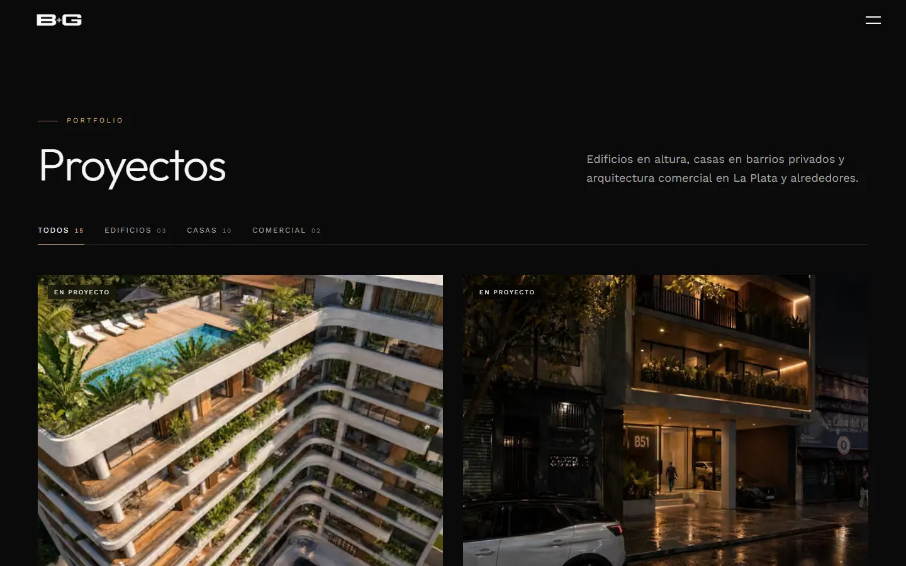
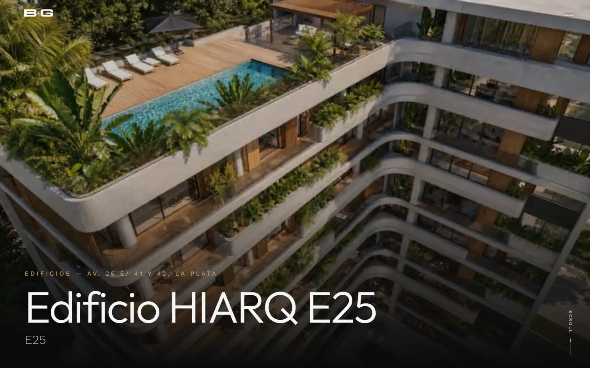
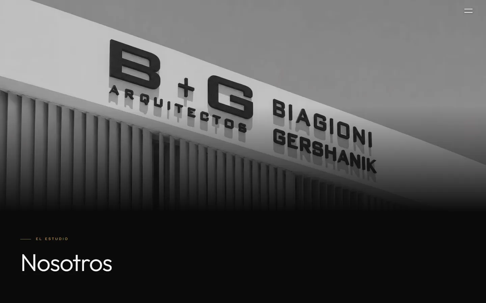

The briefEl encargo
(01)Decades of work and no website. Their best projects lived on a USB drive and in investor PDFs.Décadas de obra y ninguna web. Sus mejores proyectos vivían en un pendrive y en PDFs para inversores.
Estudio B+G designs buildings, private houses and commercial projects around La Plata. Its partners trained at UNLP and the Politecnico di Milano, and their track record includes work with the UN, the IDB and the Teatro Argentino.Estudio B+G diseña edificios, casas y obras comerciales en La Plata y alrededores. Sus socios se formaron en la UNLP y el Politécnico de Milán, y tienen antecedentes con la ONU, el BID y el Teatro Argentino.
They asked me for a minimal site where elegance and images come first, to catch the eye of high-end clients and to show as their cover letter.Me pidieron un sitio minimalista, donde manden la elegancia y las imágenes, para llamar la atención de clientes de alto nivel y mostrarlo como carta de presentación.
From a USB drive to a portfolioDel pendrive al portfolio
(02)- 03BuildingsEdificios
High-rise housing in central La Plata, with renders for the ones still in progress.Viviendas en altura en el centro de La Plata, con renders para las que siguen en proyecto.
- 10HousesCasas
Private homes in gated neighborhoods, mixing renders and site photos.Casas en barrios privados, combinando renders y fotos de obra.
- 02CommercialComercial
An environmental lab and a company refit.Un laboratorio ambiental y una refuncionalización para una empresa.



Quiet on the surfaceSobrio por fuera
(03)Portfolio with filtersPortfolio con filtros
Buildings, houses and commercial, with each project's status and year.Edificios, casas y comercial, con el estado y el año de cada obra.
Mosaic galleryGalería en mosaico
Uneven rows like an architecture magazine, with a lightbox to see each photo full size.Filas desparejas como en una revista de arquitectura, con visor para ver cada foto en grande.
Contact without leavingContacto sin salir
A side panel with a form and a WhatsApp link to each partner. No floating green bubble.Un panel lateral con formulario y WhatsApp a cada socio. Sin la burbuja verde flotante.
Interactive mapMapa interactivo
Where the studio is, built with Leaflet and no paid map service.Dónde queda el estudio, hecho con Leaflet y sin servicios de mapas pagos.
Found on GoogleAparece en Google
Metadata, sitemap and structured data aimed at searches like “architects in La Plata”.Metadatos, sitemap y datos estructurados pensados para búsquedas como “arquitectos en La Plata”.
Secure by defaultSeguro de base
Content Security Policy and security headers on every page.Política de seguridad de contenido y cabeceras de seguridad en cada página.
From raw material to a siteDel material crudo al sitio
(04)Most of the work was choosing what to leave out.La mayor parte del trabajo fue elegir qué dejar afuera.
The studio handed me everything: renders, site photos, drawings and presentations for investors. I sorted it, picked the strongest images for each project and wrote every page around them.El estudio me dio todo: renders, fotos de obra, planos y presentaciones para inversores. Lo ordené, elegí las imágenes más fuertes de cada obra y armé cada página alrededor de ellas.
How I workedCómo trabajé
(05)- D.01
Face to face with the clientCara a cara con el cliente
I met the partners at their office several times. Each meeting became a short, written list of changes: a custom error page, WhatsApp that fits the design, the order of the menu. Nothing was left to memory.Me reuní varias veces con los socios en sus oficinas. Cada reunión terminó en una lista corta y escrita de cambios: una página de error propia, un WhatsApp que acompañe el diseño, el orden del menú. Nada quedó librado a la memoria.
7.changes from a single meeting, each one trackedcambios salidos de una sola reunión, cada uno anotado - D.02
Creative freedom, used with judgmentLibertad creativa, con criterio
They trusted me with the design. I took the cues from their own work: exposed concrete, wood and a warm gold accent from the studio's facade, set in Outfit and Work Sans. A template would have looked like every other studio.Me dieron libertad con el diseño. Tomé las pistas de su propia obra: hormigón visto, madera y un dorado cálido de la fachada del estudio, con Outfit y Work Sans. Una plantilla se hubiera parecido a cualquier otro estudio.
0templates usedplantillas usadas - D.03
Heavy images, light pagesImágenes pesadas, páginas livianas
Architecture lives on big photos. Every image is served at the right size and in a modern format for each screen, and the carousel moves with transforms instead of scrolling, so it stays smooth on phones.La arquitectura vive de fotos grandes. Cada imagen se sirve en el tamaño justo y en formato moderno para cada pantalla, y el carrusel se mueve con transformaciones en vez de scroll, así sigue fluido en el celular.
105optimized imagesimágenes optimizadas - D.04
Maintained, not just deliveredMantenido, no solo entregado
When a critical Next.js vulnerability came out, I upgraded the site right away. It also ships with a strict security policy, and animations step aside for visitors who prefer reduced motion.Cuando salió una vulnerabilidad crítica de Next.js, actualicé el sitio enseguida. Además tiene una política de seguridad estricta, y las animaciones se apagan para quien prefiere menos movimiento.
CSP.and security headers on every pagey cabeceras de seguridad en cada página